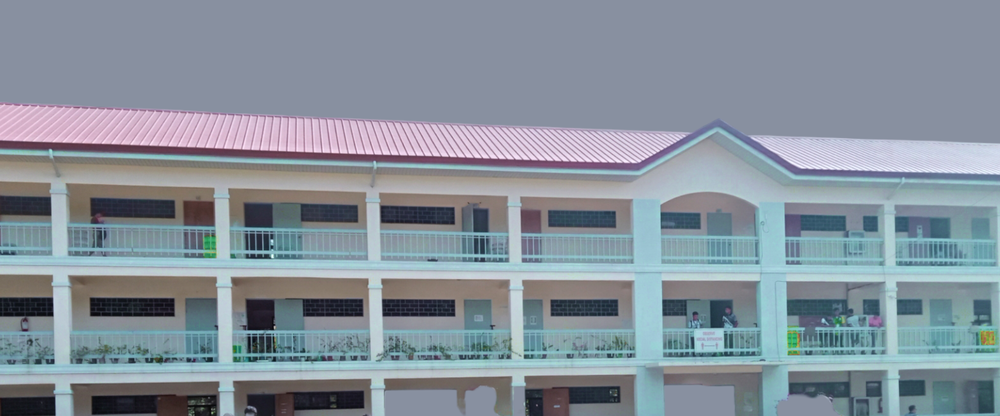
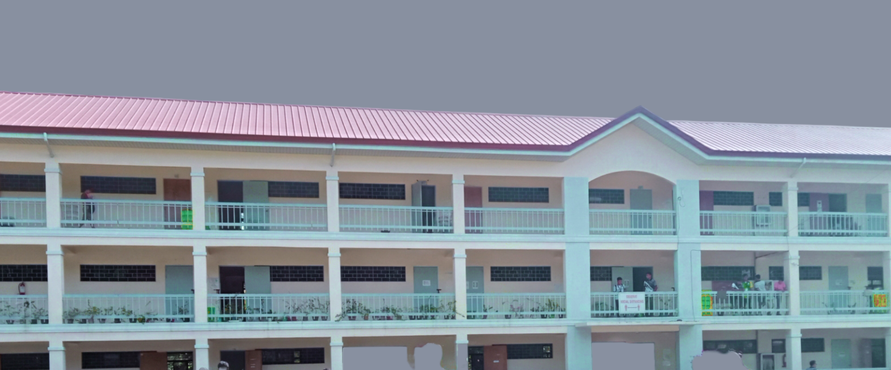

A vibrant and nurturing Polytechnic Service College for transforming lives and communities.
To improve the lives of people and communities through quality instruction, innovations, productivity initiatives, environment and industry-feasible technologies, resource mobilization and transformation outreach programs and services.
Productivity
Resiliency
Accountability
Ingenuity
Synergy
Excellence
Flourish ISPSC,
Deliver Quality Education and Services
And Launch Academic Excellence